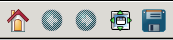
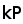
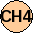
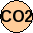
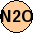
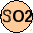

Table of Contents
ToolBar

- Toolbar : see http://matplotlib.org/users/navigation_toolbar.html
- Move L/R:
 One screen left, left,
One screen left, left,  10% screen right, One screen right
10% screen right, One screen right
- Move U/D:
 One level up
One level up  One level down
One level down
- Scale : Scale KMatrix by input profile ☆ coef
- Reset : reread original kmatrix hdf5 file
- Edit kP : Show profile for selected channel (keyboard shortcuts : p or P)
subplot T
- Y
: 44 to 101 levels of pressure (from 1040.0 to 0.005 hPa)
- X
: channel number (1 to N)
- k
: (mw/cm-1/ster/sq.m) /K
subplot Q
- Y
: 44 to 101 levels of pressure (from 1040.0 to 0.005 hPa)
- X
: channel number (1 to N)
- k
: (mw/cm-1/ster/sq.m) /ppmv
- k10%
: (mw/cm-1/ster/sq.m) /ppmv scaled by 0.1 input profile
subplot CH4,CO,CO2,N2O or O3
- Y
: 44 to 101 levels of pressure (from 1040.0 to 0.005 hPa)
- X
: channel number (1 to N)
- k
: (mw/cm-1/ster/sq.m) /ppmv
- k10%
: (mw/cm-1/ster/sq.m) /ppmv scaled by 0.1 input profile
Optional Tools
- 


Choose gas to plot
- Enter a channel number to open the corresponding Profile window